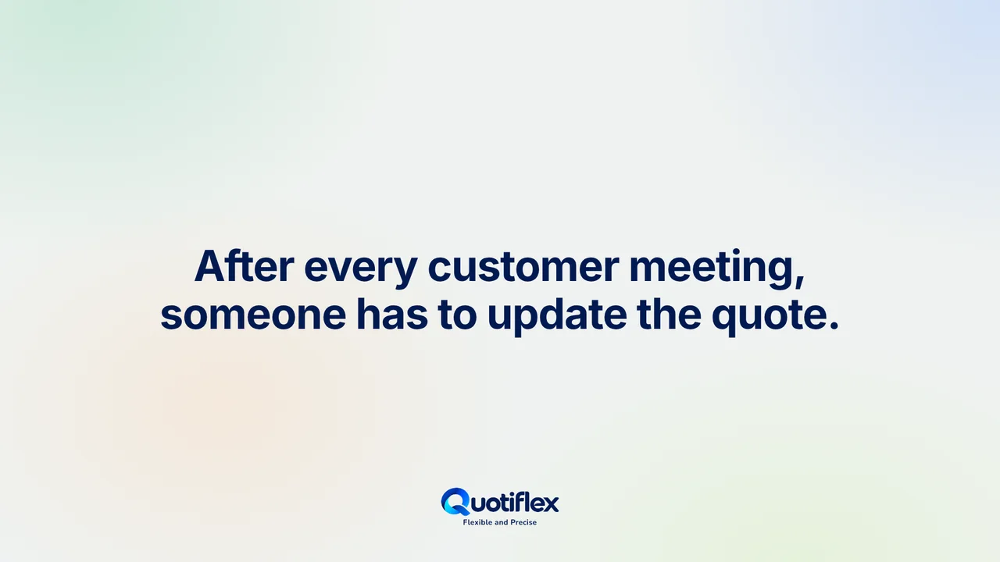

Configuration with context.
Build an offer from products and accessories. See required choices, recommendations and compatibility rules as the configuration takes shape.
- Product catalogue and categories
- Guided configuration
- Options and accessories
ENGINEERING / SOFTWARE / APPLIED AI
We bring deep engineering expertise and practical command of AI to the development of business software.
CONFIGURE
PRICE
QUOTE
Based in Prague. Engineering for the pace of modern business.
OUR PRODUCT
Quotiflex uses AI to guide solution choices, help avoid errors and find the best combinations for each offer, accelerating quote creation and approval.

Deal journal
Write the note the way you always do. With one click, the AI suggests changes to the quote, updates to the deal brief and a task, each with the sentence it came from. The rules check every suggestion, and you decide what to apply.
The videos play from YouTube in privacy-enhanced mode, and only once you press play.
THE COMPANY BEHIND QUOTIFLEX
LinkPort Systems s.r.o. develops and brings Quotiflex CPQ to market — combining product configuration, commercial control and AI assistance in one quoting workflow.
We stay deeply engaged with advances in AI, continually evaluating how to apply them most effectively. We bring that knowledge into our products and working methods wherever it adds practical value, improving productivity while keeping engineering quality at the centre.
A shared workspace for sales, engineering and finance, from product selection to the next revision.
Build an offer from products and accessories. See required choices, recommendations and compatibility rules as the configuration takes shape.
Keep prices, costs and margins in view. See how a line was calculated and how much discount remains within the applicable policy.
Use AI guidance to choose suitable solutions, catch mistakes and find effective combinations. Create and approve quotes faster, then continue through presentation and revision.
AI guides the decisions behind each quote: the right solutions, stronger combinations and fewer mistakes, with a faster path from preparation to approval.
Explore AI-assisted quotingAI recommends the most suitable solutions as a quote takes shape, helping your team make informed choices.
AI helps identify the best combinations of solutions for the requirements of each offer.
AI helps identify potential mistakes while the quote is being prepared, guiding the team towards a more accurate proposal.
AI assistance accelerates the creation and approval of quotes, helping teams move from requirements to an agreed offer more efficiently.
FROM REQUIREMENTS TO A PROPOSAL
Explore the three parts of CPQ. Each step builds on the decisions made before it.
Choose the base equipment and its accessories. Configuration rules help distinguish what is required, recommended or incompatible.
HOW WE WORK
We start with your requirements, choose the right methods and validate the result against the task.
Discuss your projectDefine the requirements, constraints and priorities that matter to your business.
Select proven methods and AI tools where they add practical value to the work.
Review the solution against the agreed requirements, with responsibility for its quality.
WHY LINKPORT SYSTEMS
Work with the people who build Quotiflex, understand its logic and develop it around the challenges of complex commercial proposals.
Talk to the teamWe develop Quotiflex and understand the product decisions, configuration logic and commercial workflows behind it.
We combine engineering knowledge with a deep understanding of how to apply AI effectively wherever it brings practical value.
Behind Quotiflex is a team that develops the system, understands customer challenges and brings that knowledge into its continued evolution.
A FEW USEFUL ANSWERS
LinkPort Systems s.r.o. is the company behind Quotiflex CPQ. This website introduces the company; the Quotiflex website focuses on the product and its capabilities.
CPQ stands for Configure, Price, Quote: choosing the right product configuration, calculating its commercial terms and creating a structured proposal.
AI recommends suitable solutions during quote creation, helps avoid errors and identifies the best combinations for the offer. It also helps accelerate quote preparation and approval. These capabilities are integrated into Quotiflex.
Your product families, pricing and approvals; how AI assistance could support your quoting workflow; and what your final proposal needs to contain. A representative product or offer is a useful starting point.
Existing users can sign in to the Quotiflex application using the company name and login credentials provided by the Quotiflex system administrator after their company has been registered in the system.
LET’S CONNECT
Tell us about your business and the quoting challenges you want to explore.
LinkPort Systems s.r.o., Vlková 532/8, Žižkov, 130 00 Praha, Czech Republic, is responsible for the personal information you submit through this contact form. We use your name, email address, optional company name and message to respond to your enquiry.
For questions about your submitted information or to request its deletion, please contact us using the form above.
A video on this page plays from YouTube in privacy-enhanced mode (youtube-nocookie.com), and only once you press play; nothing is requested from YouTube before that. YouTube's privacy policy then applies to the video.
Links on this page may take you to external websites with their own privacy practices.